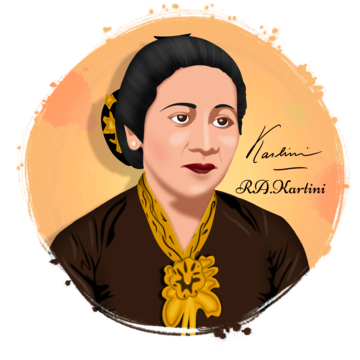

Tentang R.A. Kartini
Ikon Feminisme Indonesia
Raden Adjeng Kartini (21 April 1879 - 17 September 1904) adalah seorang pahlawan nasional Indonesia dari Jawa. Beliau merupakan pelopor dalam bidang hak-hak perempuan bagi masyarakat Indonesia dan diperingati setiap tahun pada Hari Kartini.
Lahir dari keluarga bangsawan Jawa di Jepara, Jawa Tengah, Kartini adalah salah satu dari sedikit perempuan Indonesia yang berkesempatan menerima pendidikan bergaya Barat. Paparannya terhadap pemikiran feminis Barat menginspirasinya untuk memperbaiki kondisi perempuan Indonesia yang saat itu memiliki status sosial sangat rendah.
Kontribusi
- Memperjuangkan pendidikan untuk perempuan
- Mendorong kesetaraan gender di masyarakat
- Menginspirasi gerakan emansipasi wanita
- Mendirikan sekolah untuk perempuan
- Menulis surat-surat yang menjadi inspirasi
- Melawan tradisi yang mengekang perempuan
Warisan Kartini

Masa Muda Kartini
Sejak kecil Kartini sudah menunjukkan ketertarikan pada pengetahuan sejak dini. Meski harus menjalani pingit seperti tradisi bangsawan Jawa saat itu, ia terus belajar secara mandiri.

Surat-surat Kartini
Korespondensi Kartini dengan teman-temannya di Belanda menjadi bukti pemikiran visionernya. Surat-surat ini kemudian dibukukan dengan judul "Habis Gelap Terbitlah Terang".

Sekolah Kartini
Setelah wafatnya Kartini, didirikanlah Sekolah Wanita oleh Yayasan Kartini di Semarang pada tahun 1912, yang kemudian berkembang ke kota-kota lain seperti Surabaya, Yogyakarta, Malang, Madiun, dan Cirebon.
Hari Kartini
Setiap tanggal 21 April, Indonesia memperingati Hari Kartini untuk mengenang jasa-jasanya dalam memperjuangkan kesetaraan hak perempuan. Berbagai kegiatan dan lomba diselenggarakan untuk memperingatinya.
Galeri

{kind=link}
{kind=link}
{kind=link}
{kind=link}
{kind=link}
Kutipan Inspiratif Kartini
Kesimpulan
Hak Cipta ©. Semua Hak Dilindungi. — Dirancang dengan ❤ oleh Dion & Afif